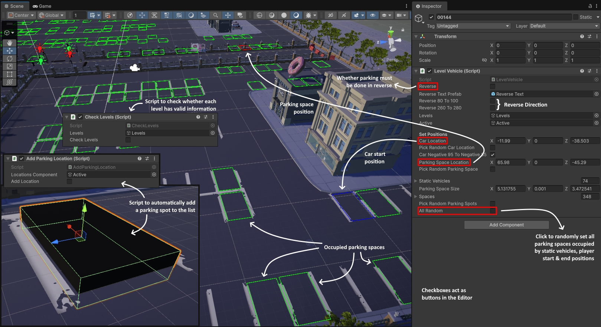

Parker
Master the art of parking in this feature-rich 3D simulation.
Download on WindowsCore Gameplay
- Progression System: Earn money, buy cars, and unlock the test drive area.
- High Stakes: Timer + 3 Heart system. Collisions reduce rewards.
- Camera Systems: Orthographic main view, First-Person, and 4 side cameras.
- Assists: Navigation arrows and "Mini Camera" window for blind spots.
Vehicle Physics
- 45 Drivable Cars: Each with unique handling and feel.
- Full Control: Headlights, brake lights, reverse lights, and horns.
- Drifting: Skid marks and audio feedback.
- Special Units: Custom police car with toggleable sirens.
Engineering & Tooling
Parker isn't just a game; it's built on a robust framework.
- Custom Level Generator: I built a helper system to generate layouts instantly (static cars, empty spots, start/finish logic).
- Analytics Integration: Tracks gameplay behavior to balance difficulty.
- Reverse Parking Support: Automatically handles logic for complex parking requirements.
Behind the Scenes
To manage Parker's 75+ levels, we built a custom Unity Editor tool that generates valid parking layouts, reducing level design time by 90%.

Update Log
Version 1.3
Latest
- Added 20 new drivable vehicles.
- Added test drive area.
- Added tooltips to main menu options.
- Added reverse lights to all vehicles.
- Added analytics and detailed consent.
- Revamped save system.
- Improved lighting in scenes.
- Modified garage scene.
- Fixed handbrake not slowing vehicles down.
- Fixed vehicle audio not falling under SFX volume settings.
- Fixed UI audio bug.
- Fixed UI scaling.
Version 1.2
- Added new parking area.
- Added 75 levels.
- Fixed car movement upon level end.
- Fixed music change between scenes.
- Fixed bugs.
Version 1.1
- Added difficulty levels.
- Added 50 levels.
- Added new parking area.
- Added option to skip levels.
- Added control map for keyboard and Xbox controller.
- Changed parking lot skybox for a clearer environment.
- Fixed timer pausing on park.
- Fixed menu navigation bug.
- Optimized car setup.
- Optimized controller input.
- Added links to Privacy Policy and Terms And Conditions.
Version 1.0
- First release!